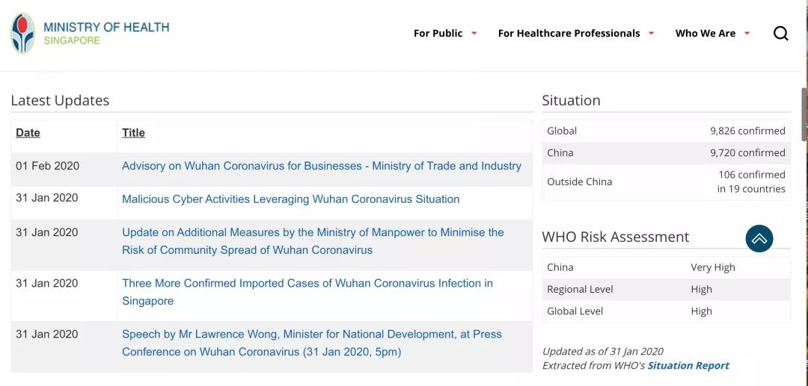
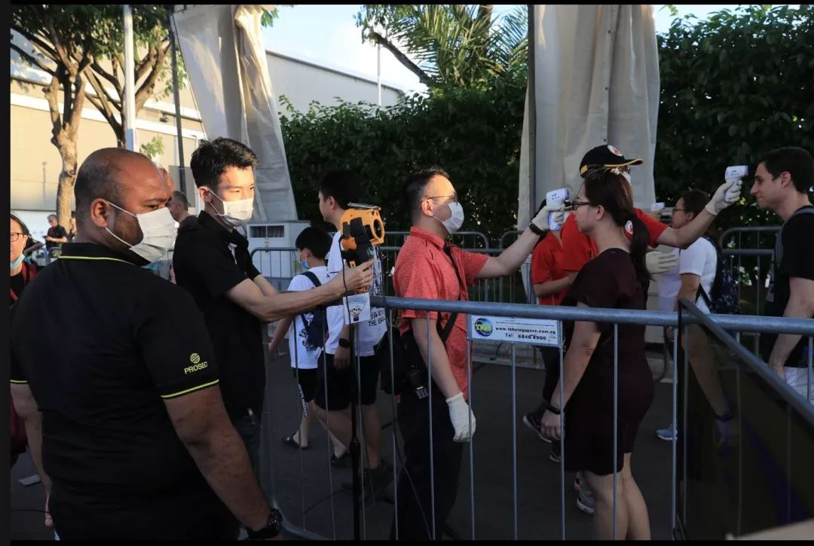
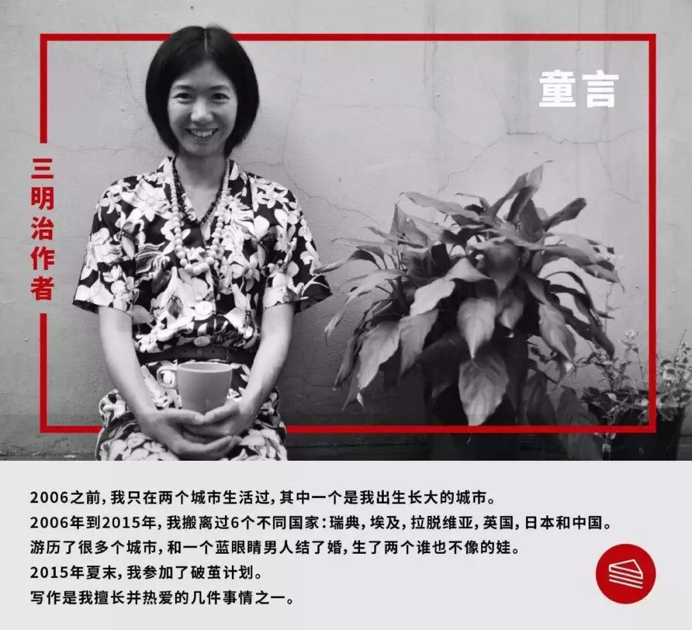

50位武汉人，亲笔写下他们“封城”第一天的生活 | 三明治持续更新中
原文链接 备份链接 昨天是武汉封城第一天，三明治紧急发起了每日书特别版《武汉日常》，邀请人在武汉和家乡在武汉的朋友，一起来用文字忠实记录他们在这个特殊时期的生活日常。 招募一经发出，就有近百位朋友迅速响应，其中有一路哭着坚持回家过年的北 …

童言是生活在新加坡的三明治专栏作者。自1月23日确诊第一例“新型冠状病毒肺炎”病例以来，目前新加坡已确诊18个病例，在海外确诊数据中排名第三，仅次于日本、泰国。
这场“肺炎”疫情牵动着许多在海外中国人的心绪。华人群体是新加坡占比最大的族群，新加坡社会是怎样看待“肺炎”疫情的？生活在新加坡的民众是否有受到影响？童言为我们带来了她个人视角的观察记录。
文 ｜ 童言
编辑 ｜ 依蔓
📍
这是一位生活在新加坡的作者
所带来的疫情观察日记
今年的年三十我是在新加坡过的，邀请了几家朋友来吃年夜饭聚会。他们都来自欧洲，对“肺炎”病毒的关心不及国内，大家简单聊聊就过了。我的立陶宛朋友甚至还完全没有意识到病毒的存在。她不看新闻，也劝我少看。
只有德国邻居汉娜和我一样，时刻关注新闻发布。
“你知道吗，刚才我在超市采购，” 汉娜突然抓住我的手臂说，“忽然传来一声咳嗽，几乎所有人立马上警惕起来，伸长脖子到处寻找咳嗽来源。”
她说完，看了看手腕上的苹果手表，“新加坡确诊三例了！”
其实早在1月2日，即元旦后第二天，新加坡卫生局就在其官方网页上，通报关于来自武汉的新型病毒。当然，我和许多人一样，既没有把这个事件放在心上，也没有意识到要上网查进展。是直到过年前一周，我才隐隐觉得担忧的存在。

新加坡卫生部目前最新的数据通报
那天，我和朋友一起吃饭。朋友聊起病毒，并表示有点担心。我倒有点不以为然，心想武汉离新加坡远着呢。而且每天浏览BBC新闻，关于”武汉出现未明病毒“的新闻只出现过几次，并非头条位置。
我其实更担心登革热，因为一位朋友说自家佣人中招了，而朋友家离我只相隔两条街。要知道在新加坡，登革热病可是全国最严格防范的传染病，环境部门定时上门检查家里是否有助长蚊子产卵的积水。要是发现家里清理积水不及时或不合格，还会罚款。
再说，2003年的非典，我就处在疫情严重的北京。我那时上大三，一夜之间所有高校封锁。我和同学每天关注饭堂里电视屏幕下的滚动字幕，那种绝望而恐惧的感觉，真是今生难忘。我想，再怎么样，这种新型病毒也不会比非典来的严重吧。况且，当时我也询问了在武汉上研究生的学弟，他说没怎么受影响。
那还担心什么？
但接下来，情况突然有了转变。1月23日，新加坡确诊首例输入型“新型冠状病毒”。这一消息就像飞箭，一下刺穿了这个热带岛屿的保护层。打开新加坡的《海峡时报》 （The Straits
Times）, 我不仅看到最新的状况描述，就连这位被确诊病人的年龄，入境日期，在新加坡的路径，以及去了哪个医院，都一一作了详尽报道。总之，给人一种一切在掌控之中的感觉。

海峡时报报道截图
彼时在国内，武汉已经封城，全国确诊人数一路攀升。新加坡街头戴口罩的人数寥寥无几，但我听说药房口罩已脱销。为了保险起见，年三十的采购，我选择去了家附近人流不大的小超市，并且时刻叮嘱孩子们好好洗手。
确诊病患的前居住地，
在我常去的超市对面
大年初一早上，我微信拜年，除了“新年快乐”，还加上一句“一切还好吗？”
上海的朋友回复：一切都好。香港的朋友取消了本来订好的四川熊猫之旅，乖乖待在家。学中医的朋友则说自己比较镇静，因为中医认为，病毒进入人体得找其喜欢的环境。她每天站桩，打太极，以增强自身免疫力。在广州的父母终于买到口罩，就是不敢上街，在家凑合吃点年货打发。
住在新加坡的一位中国朋友则表达不安。她住在市中心，周围临近牛车水唐人街和小印度，都是游客聚集的地方——确认的头三名病人在新路径，就集中在旅游热点。”我网上订购了足够一周用的肉和蔬菜，“她说。”以防万一！”
了解了朋友们和家人的状态后，我感到些许安慰。可翻了翻聊天记录，认识的一位台湾好朋友，好几天没消息了。友人在上海工作，过年前应该回台了，难道……被隔离了？
再等等吧，我想。
春节假期，我本来打算到乌节路一家专卖店，亲身体验传闻中贵得离谱的瑜伽裤。但乌节路就在市中心，总是人挤人的，还是去户外好。
我决定带着娃们到东部海滩。东海岸公园风景宜人，长达15公里的海岸线，全程为非机动车道，最适合人们骑车跑步做运动。要是忽略停泊在远处的几十艘炼油船，阳光，蔚海，沙滩，应有尽有。
我看着孩子在海边玩沙子，自己铺开垫子，舒舒服服地躺在树荫底下。海风轻轻抚摸着我的皮肤。岸边各处烧烤派对，酒肉香气愉快地拍打我的神经。顿时，我觉得自己离病毒，离所有的纷纷扰扰很遥远。台湾朋友还没消息，不管了，先让我好好呼吸。
放松的同时，其实我也在密切关注新加坡对于这次疫情的报道。
根据我的观察，新加坡官方层面报道还是很不偏不倚，完全不会如法国媒体那样在头条放出“黄色警报”（Alerte Jaune）这样带种族歧视的语言。至于评论部分，大多为中肯建议，例如病毒爆发初期，曾有评论员写道中国的养殖业设施应尽快完善。

近期的声音则以围绕本国如何处理疫情为主，大家都鼓足勇气，希望新加坡人们齐心合力战胜病毒。要是出现谣言，新加坡卫生局第一时间在官网上辟谣，所有关于这次病毒的行动与措施，都一一列在公告上。就像之前传言新加坡遣返百名武汉旅客，卫生局马上出来澄清。
新加坡社会的反应则算积极。在总理李显龙的Facebook页面下，几百条留言支持并赞扬总理的决策。其中几段视频显示，李总理没戴口罩到医院探访医护人员，民众看了后互相鼓励说，大家一定要保持镇定，国家绝对能控制住病情。也有不少人建议总理，不能再使用“武汉病毒”这样的字眼。而其他主流媒体的Facebook页面下，祝愿感染病人康复的消息不在少数，看了让人觉得异常温暖。
新加坡公益机构如Give.asia也开始募捐活动，民众大部分表示同情，但也有许多在评论里着重提醒：捐赠具体物品而不是资金，并一定和当地医院直接联系, 想来新加坡人也密切关注国内新闻，消息灵通。
至于新加坡个体的看法？我问了问一位和我很聊得来的新加坡朋友，这是她的回答：
“我和我的朋友们都十分同情那些被困在疫区的人们。本应是高高兴兴阖家庆祝的节日，却被突发的疫情而打断。但对于那些例如吃退烧药逃离出境的个体，我感到些许愤怒。这些人并没有担当起应有的社会责任。”
我谢过朋友的答复后，终于收到台湾朋友的回信，没事，谢天谢地！
再看看最新疫情，1月28日新加坡确认病例7宗，其中一例病患住院前居住地点为锡兰路……怎么听着那么耳熟？我连忙把地址输进搜索引擎，
啊！就在我常去的超市对面！
负面情绪囤积在胸口，
呼吸困难……
大年初四早上，我醒后发现自己胸口又紧又痛，就像被墨水堵住，浓得化不开。
其实，我百分之九十九能肯定，自己没有感染病毒。但就算只有0.01%的疑惑，也让我开始有点慌张。我很清楚，慌张，源自铺天盖地的手机信息。
我一直在努力抵抗沉溺，所以我关闭朋友圈，尽量不看也不刷。我订阅的微信公众号只有13个，其中6个为休眠状态。这种自律让我能在照顾孩子之余，挤出足够时间来写作、阅读、运动、社交。
但这些努力因为病毒的到来而分崩离析。每天一睁开眼睛，我必定拿出手机查看新闻，中文的，外文的，像全职新闻人一样追踪病情。就算我加入的微信群不多，但总有那么几个群时刻更新病情动态，只要一出现红色信息提示，我就迫不及待地想点开。我也尝试过退出微信，可顶多坚持三个小时，然后又忍不住登录，忍不住点开消息，恶性循环。
这些消息里，又藏着太多的真真假假。这边甫一发布独家报道，那边就来了辟谣。一位专家刚发表了评论，另一边却又因为评论闹起来。朋友圈里也弥漫着一种悲观的情绪，看得人只想把自己蜷缩起来。
我已经足足一周没有下笔写字了，本应该处理的图片，一点也没开始。脑袋整日处于浑浑噩噩的状态，没有动力，不想干活。勉强给娃做了饭，打发他们看电视，我又再次回到捧着手机的颓废。只是，胸口感觉越来越不好受，恐慌、愤怒、难过、失望，各种负面情绪囤积在那儿，呼吸困难。
我应该做点什么！
我决定放下手机，出门找邻居汉娜。她一看见我就急如星火地说：“你来了太好了！昨天半夜我的胸口发紧得要命，差点打电话把自己送到医院去呢！”
”怎么和我一个怂样！”
我哈哈笑起来，想起这大概是过春节以来自己第一次开怀大笑。
“今天泰拳馆开门呢！“ 汉娜说，”走，我们打拳去，发泄发泄就好了！“
“可是，我先生还没回家，娃没人带呀！“
”就放在我家吧！“汉娜说。
一个半小时训练结束，我终于呼吸顺畅了。
晚上，先生回来说，新加坡和泰国的宜家商店里，洗手液、口罩全面告急。滴露牌消毒产品，东南亚脱销，连库存都没有了。宜家上下员工都在为寻找防护资源而发愁，宜家中国则宣布，1月30日起，全部门店暂时关闭。
临睡前，我忍不住刷了一遍疫情数据更新，新加坡确诊病患仍然是7例。
2月，新加坡确诊“新型冠状病毒”…例
新加坡人口570万，去年登革热感染人数14658人。现有的7例病患，按比例，真的只是冰山上的一小角。（当然，此次病毒强烈的传染性，我们应该做好防护措施，不能掉以轻心。）
再说，新加坡政府不是已采取措施了吗？从二月一日起，凡到过中国的游客，勿论国籍，都将禁止进入新加坡。持有长期居留准证的中国人，虽然允许入境，但他们和所有幼儿与护理员工一样，只要从中国回来的，必须休假14天。口罩倒不强求戴上，不过主流报纸封面都详细介绍口罩的正确使用方法。

新加坡当地报纸
我应该放心。
我也确实放心了半天。可就在孩子开学前一天，事情生出了新状况。
问题出在确诊的第五号病例，传闻这位女士是陪读妈妈，其孩子是我们学校的学生。我马上把消息发给认识的一位全职爸爸。他说自己所在的家长微信群已经在讨论，有消息会及时通知我。
很快，全职爸爸回复：”以讹传讹！“
原来，患病女士并非陪读妈妈，孩子也不在国际学校。不知道谁把信息混来混去，就成了孩子是我们学校学生的谣言了。
我松了一口气，却开始犯愁。开学了，到底送不送孩子回学校？
为了应对病毒，学校提前让学生家长在网上填写表格，交代假期内是否到过中国，或在新加坡招待过来自中国的客人。学校也发通知，课外活动全部停止。
我问了一圈家长朋友，有的说送，有的不送，大家都有点犹豫不决。刚好女儿的好朋友决定不上学，还邀请女儿到她家里做客，我便名正言顺地找到留在家的理由。
全职爸爸倒是如常把孩子送回学校了。他给我发来及时报道，每个孩子，家长，进校门必须测量体温，并回答校方关于假期去向的问题。有几个小朋友家里因为年前招待过从国内来的长辈或亲人，当即被学校劝退回家。全职爸爸还说，校园里戴口罩的人不多，大家都很轻松，就是来上学的小朋友很少，她女儿班上学生总数24人，只有9位来上学。

体温测量站
周末，我收到学校邮件，下周课外活动课即将恢复正常。而我，退了几个喧闹的微信群，专心开始码字。新加坡确诊”新型冠状病毒“病例持续缓慢增加，但我们的生活几乎没有受到任何影响，商店开门，餐厅营业，连新年期间最吸引人流的庆祝活动“妆艺大游行”也如期进行。
我由衷希望，病毒早日被打败，世界恢复本来的秩序。

给作者赞赏


《“冒昧问一句，你这次回国没去过武汉吧？” | 美国南部的“肺炎”日记》

原文链接 备份链接 昨天是武汉封城第一天，三明治紧急发起了每日书特别版《武汉日常》，邀请人在武汉和家乡在武汉的朋友，一起来用文字忠实记录他们在这个特殊时期的生活日常。 招募一经发出，就有近百位朋友迅速响应，其中有一路哭着坚持回家过年的北 …
原文链接 备份链接 本文由娱志The Review原创出品 华东师范大学传播学院学生娱评号 转载需申请授权 作者 | Moe，苏博 编辑 | 华实 导语 “自2020年1月23日10时起，全市城市公交、地铁、轮渡、长途客运暂停运营；无特殊 …
原文链接 备份链接 今年回武汉的票特别好买，几乎不用抢，就很轻易地买到了北京西站到武汉站的票。到武汉的时间是晚上八点半，就在附近的旅馆住一夜，第二天去汉口的青年路客运站坐长途客车回武穴。 我把这个计划告知我朋友后，朋友说：“不要在武汉逗 …
原文链接 备份链接 - 疫 情 之 下 - 只有在这样的特殊时刻，我们才体会到平平常常的日子是多么美好，多么幸福…… ” 疫情爆发得如此迅猛，让所有人始料未及。 己亥年腊月二十九，公历2020年1月23日，我去单位上年前最后一天班，那时我 …
原文链接 备份链接 1 农历二十九。去药店，排队买口罩。 前面一位五十多岁、身穿墨绿色工作服的大叔，从胸前的口袋里掏出一个信封，倒出一堆折叠得方方正正的纸块。展开一个个纸块，现出一张张二十元、十元、五元的纸币。 有种看穿越剧的错觉。之后， …